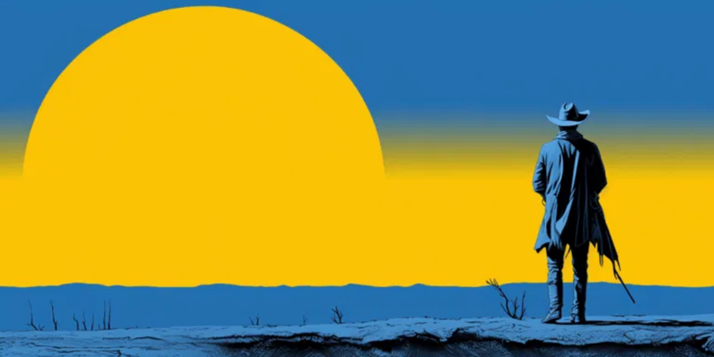

Beyond the Sunset: Why Westerns Still Saddle Up Our Imaginations
The dusty plains, the lone rider on the horizon, the sharp crack of a revolver cutting through the silence – Western movies have etched themselves into the very bedrock of cinematic storytelling. While sometimes dismissed as a relic of a bygone era, the truth is, Westerns continue to deliver some of the most enduringly intriguing stories and fascinating facts in film history. So, pull up a saddle, partner, because we're riding deep into the heart of the Wild West. What makes these sagas of cowboys, outlaws, and pioneers so captivating? It's more than just shootouts and daring train robberies. Westerns are often morality plays, exploring themes of justice, revenge, survival, and the clash between civilization and the untamed wilderness. Think of the stoic resolve of a hero protecting the innocent, the complex motivations of an anti-hero seeking redemption, or the stark beauty of unforgiving landscapes that shape destinies. These narratives, often stripped down to their raw essence, resonate with universal human struggles, set against a backdrop of boundless opportunity and brutal danger. They paint vivid pictures of a time when personal codes meant everything, and the law was often what you made of it. But the genre holds more than just compelling narratives; it's packed with cool facts that deepen its legend. Did you know that the iconic "Spaghetti Westerns" of the 1960s, largely directed by Italians like Sergio Leone and filmed in Spain, revitalized the genre and introduced the world to Clint Eastwood's "Man with No Name"? Or consider that many of the genre's greatest actors, from John Wayne to Gary Cooper, essentially became synonymous with the American archetype through their roles. And here's a fun one: the famous "Wilhelm Scream" sound effect, now a Hollywood inside joke used in hundreds of films, originated in the 1951 Western Distant Drums. Westerns aren't just about history on screen; they are a significant part of film history themselves. From the classical heroism of Stagecoach to the gritty realism of Unforgiven or the epic scope of Dances With Wolves, Westerns continue to evolve, offering timeless tales of courage, conflict, and the human spirit against vast, challenging backdrops.
So, for all you fellow movie enthusiasts out there, what's your favorite Western movie and why does it resonate with you? Share your thoughts in the comments below!
← Back to Blog